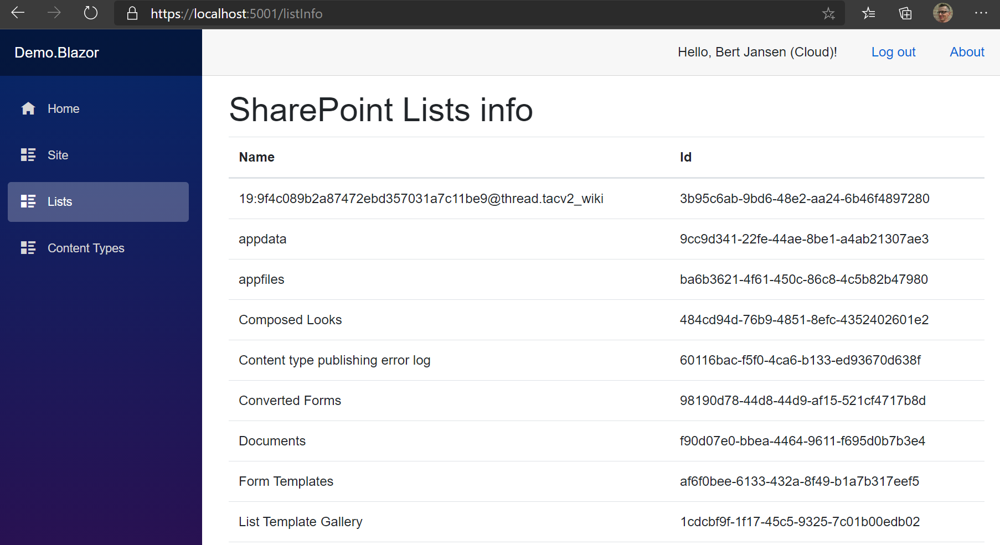

PnP Core SDK - Blazor Sample
This solution demonstrates how the PnP Core SDK can be used in a Blazor WebAssembly app
Source code
You can find the sample source code here: /samples/Demo.Blazor
Run the sample
Register and configure an AAD app
In order for the user to authenticate on the App, A new app registration should be created on Azure Portal
In App registrations, click New registration
Enter a name for your new app, make sure Accounts in this organizational directory only is selected. As the Redirect URI, in Web platform enter https://localhost:44349/authentication/login-callback (The port may vary according to your Visual Studio)
Make sure that the added Redirect URI is for a Single-Page Application
Under Implicit grant section, check Access tokens and ID tokens
Go to API permissions section , click Add a permission -- Select SharePoint > Delegated permissions > select AllSites.FullControl -- Select Microsoft Graph > Delegated permissions > select email, openid and Sites.FullControl.All
Click Grant admin consent for {tenant}
From Overview, -- copy the value of Directory (tenant) ID -- copy the value of Application (client) ID
Configure your application
- Replace
{sharepoint_url}the URL of your SharePoint site in app setting - in the file
wwwroot/appsettings.json, replace the{client_id}and the{tenant_id}accordingly with the values from above
Execute
Hit F5 in Visual studio to execute the Blazor app. When trying to access one of the sections, the applications prompts you for signing in
